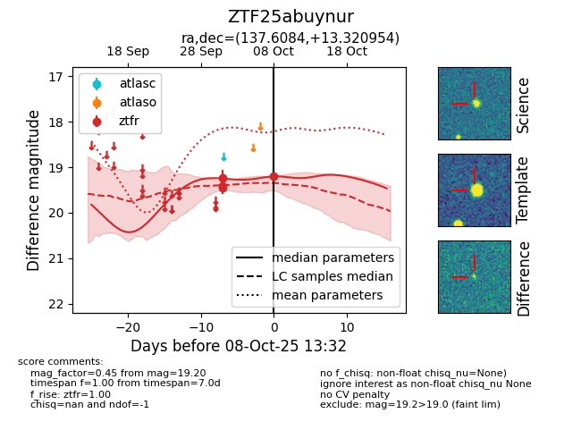
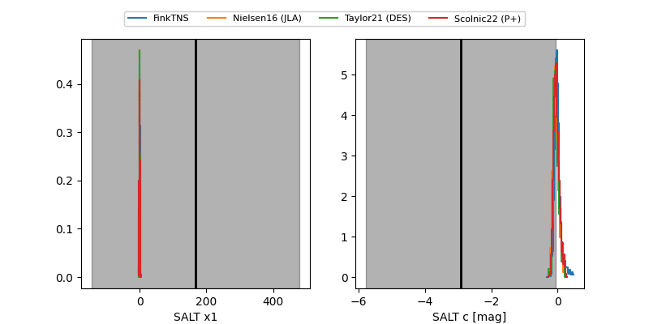

FINK: ZTF25abuynur
Lasair: ZTF25abuynur
ALeRCE: ZTF25abuynur
ZTF25abuynur (ztf,fink)
equatorial (ra, dec) = (137.6084,+13.32095)
galactic (l, b) = (216.3569,+36.77609)


last ztfr=19.20
4 ztfr detections